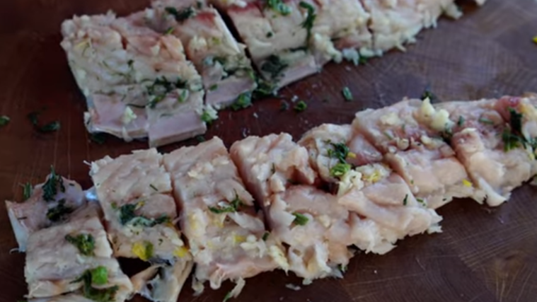

Рецепти з часнику
Повернутися назад
Часниковий хліб
Українські пампушки з часником
Часниковий соус
Огірки на зиму з гірчицею і часником
Помідори з часником мариновані
Баклажани з часником

Скумбрія з часником
Крильця в духовці з сиром, кропом та часничком